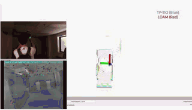
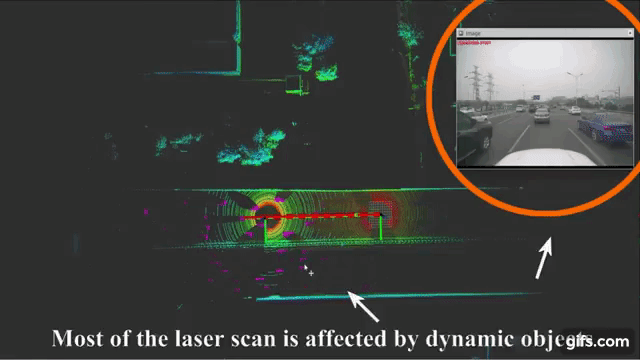
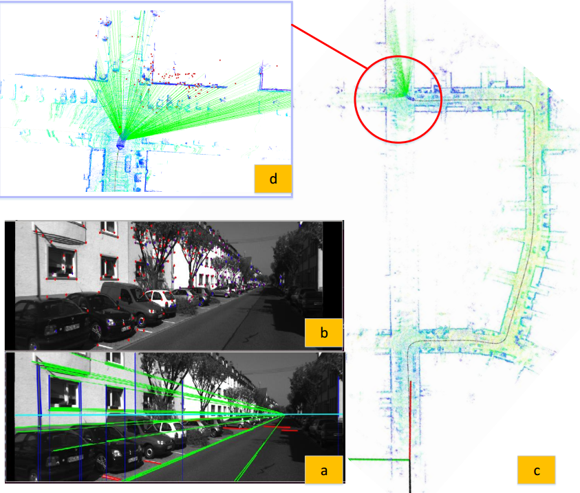
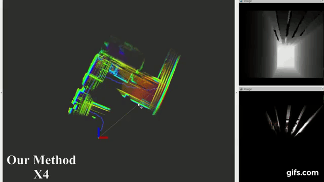
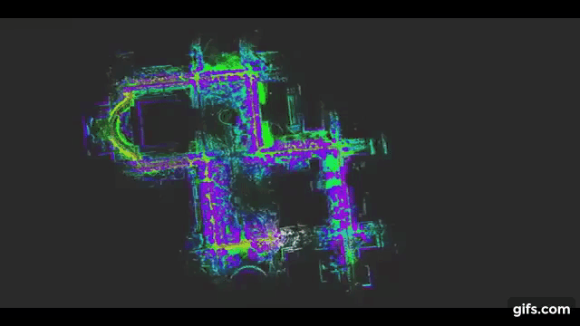
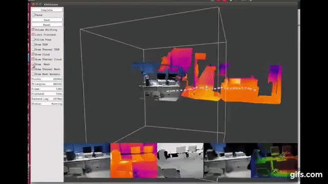

|
Shibo Zhao （赵世博）
Research Associate
|
Biography
I am currently a research associate at AIR lab, Robotics Institute, advised by Professor. Sebastian Scherer. Prior to that, I was supervised by Professor Zheng Fang and received my Master's degree from Northeastern University in 2019.
I serve as a SLAM investigator of Team Explorer competing in the DARPA Subterranean Challenge. I develope Super Odometry and TP-TIO odometry for Team Exlporer, which is adopted as major method to acheive state estimation. For more detail, please check out this cool video from Microsoft and the compilation of our Urban Circuit performance!
I am focusing on the simultaneous localization and mapping (SLAM) in challenging environments. I am also interested in related topcis including multi-sensor fusion, deep learning.
News
Oct 2020: Paper on thermal odometry published on IROS 2020.
Aug 2020: Super Odometry has been adopted as a major method to achieve state estimation in the SubT Challenge.
Feb 2020: Came in second place in the SubT Urban Circuit.
Oct 2019: Paper on laser odometry published on IROS 2019.
Aug 2019: Came in first place in the SubT Tunnel Circuit .
Research Experience

|
Super Odometry: Sensor-aware Based Lidar-Visual Inertial Estimator
Department: Carnegie Mellon Explorer Team Tasks: Localization in mine Shibo Zhao, Sebastian Scherer We propose a generic IMU based framework to achieve selective sensor fusion enabling more robust state estimation. IEEE Robotics and Automation Letters (manuscript in preparation) [Introduction] [Video] |
|
 |
TP-TIO: A Robust Thermal-Inertial Odometry with Deep ThermalPoint
Department: Carnegie Mellon Explorer Team Tasks: Perception in smoke Shibo Zhao, Peng Wang, Hengrui Zhang, Zheng Fang, Sebastian Scherer IROS, 2020, Oral (Top conference in robotics) [Paper] [Video] |
|
 |
Laser-Inertial Odometry and Mapping for Large-Scale Highway Environments
Department: Tencent Autonomous Driving Lab Tasks: Localization and Mapping Shibo Zhao, Zheng Fang, HaoLai Li, Sebastian Scherer IROS, 2019, Oral (Top conference in robotics) [Paper] [Video] |
|
 |
Vanishing Point Aided LiDAR-Visual-Inertial Estimator
Department: Robot Science and Engineer Institute Tasks: Localization and Mapping Peng Wang, Shibo Zhao ICRA, 2021 (under review) [Video] |
|
 |
Direct Depth SLAM: Sparse Geometric Feature Enhanced Direct Depth SLAM System
Department: Robot Science and Engineer Institute Tasks: Perception in darkness Shibo Zhao, Zheng Fang Sensors, 2018 [Paper] [Video] |
|
 |
A Real-Time 3D Perception and Reconstruction System Based on a 2D Laser Scanner
Department: Robot Science and Engineer Institute Tasks: Localization and Mapping Zheng Fang, Shibo Zhao Journal of Sensors 2018 [Paper] [Video] |
|
 |
A Real-time Handheld 3D Temperature Field Model Reconstruction System
Department: Robot Science and Engineer Institute Tasks: Perception for rescue robots Shibo Zhao, Zheng Fang, Shiguang Wen CYBER 2017 Best Paper Finalist(0.2%) [Paper] [Video] |
Research Internship
- June. 2019 - Present Research Intern, Carnegie Mellon DARPA Subterranean Challenge Team, CMU USA
- June. 2018 - Oct. 2018 Research Intern, Tencent Autonomous Driving Lab, Tencent China
Community Service
- June. 2018 -2020 Conference Reviewer, IROS USA
- June. 2020 - Junly. 2020 Student Volunteer, CVPR 2020 Visual Localization Challenge Workshop China
Awards and Honors
- Jun. 2019: Served as the SLAM investigator of Team Explorer, Carnegie Mellon University
- Jun. 2019: Outstanding Research Scholarship, Northeastern University (1%)
- Jun. 2018: National Scholarship, The Chinese Ministry of Education (0.2%)
- Jun. 2017: First Prize Scholarship for Graduate Students, Northeastern University (5%)
- Jan. 2017: Second prize, “Challenge Cup” Academic Competition, The Chinese Ministry of Education (8%)
- Dec. 2016: First Prize Scholarship for Graduate Students, Northeastern University (5%)
- Oct. 2016: Principal Gold Medal, Northeastern University (3%)
- May. 2016: Honorable Mention, American College Students Mathematical Modeling Competition (3%)
- May. 2016: Candidate, Outstanding National College Student (0.2%)
- May. 2016: National Scholarship, The Chinese Ministry of Education (0.2%)
- Dec. 2015: First Prize, National College Student Mathematical Modeling Competition (5%)